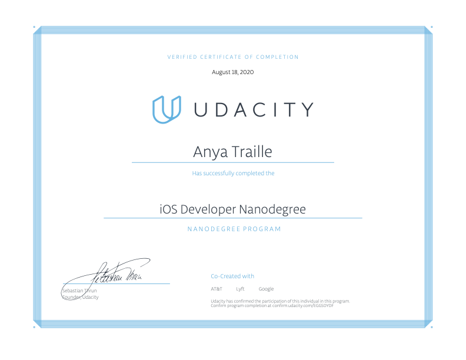
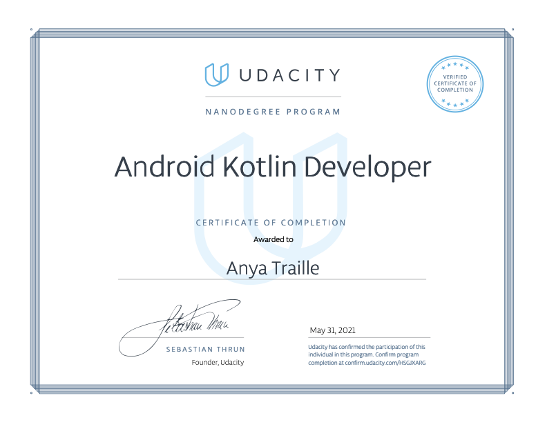
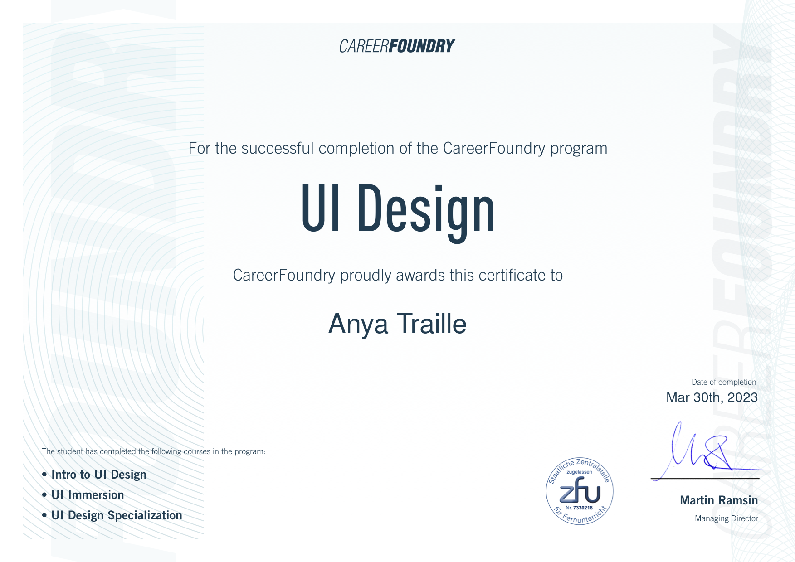
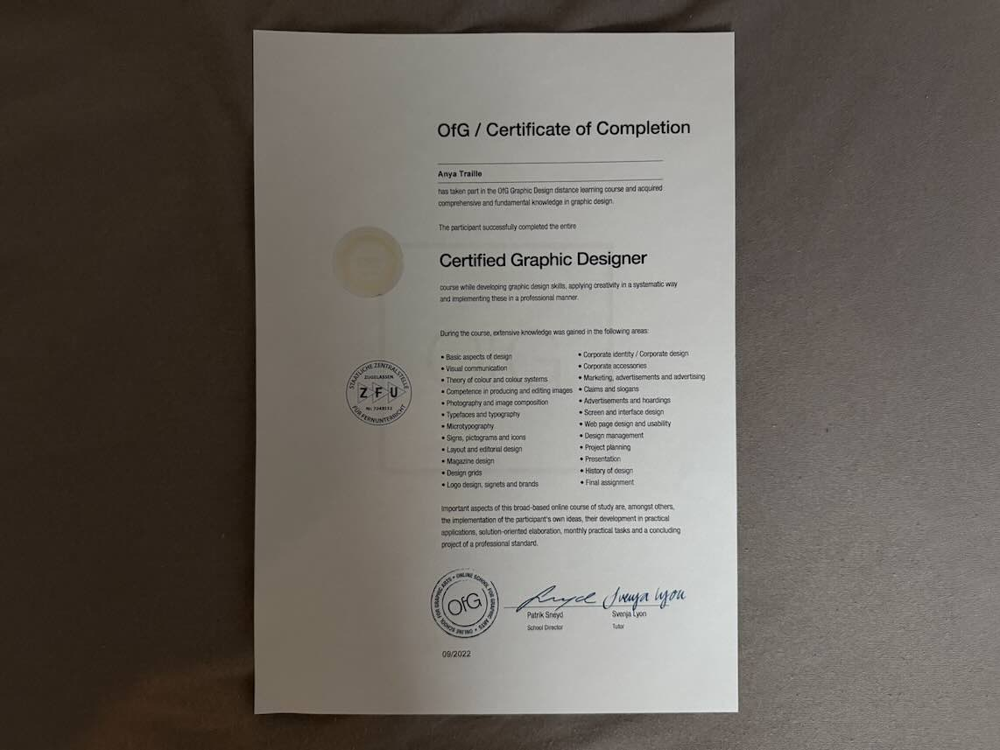
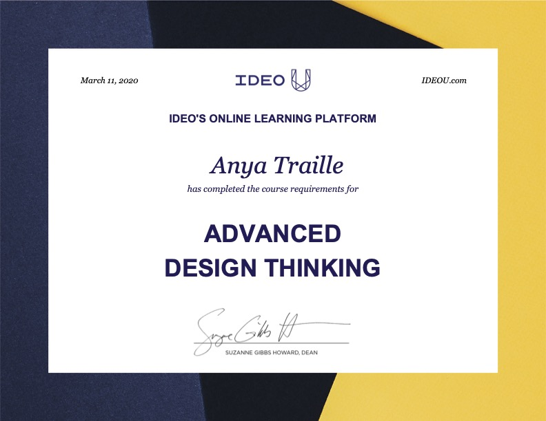
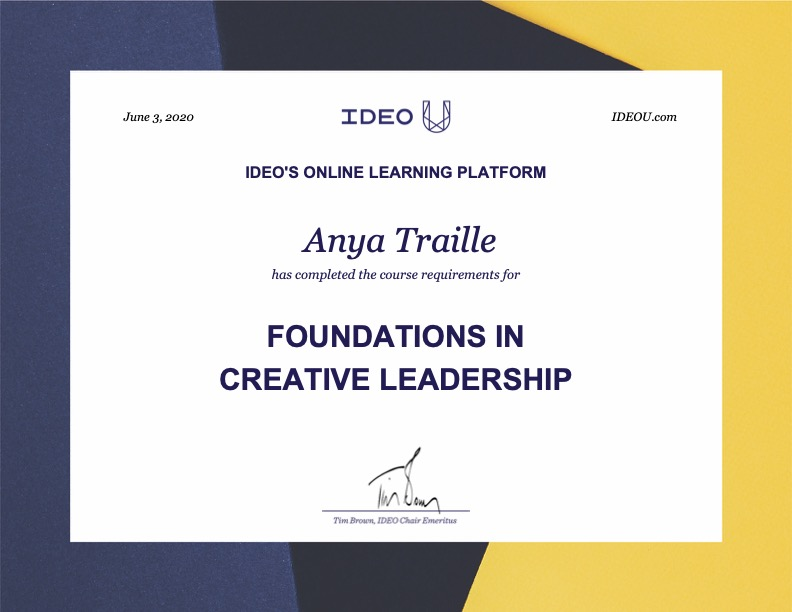
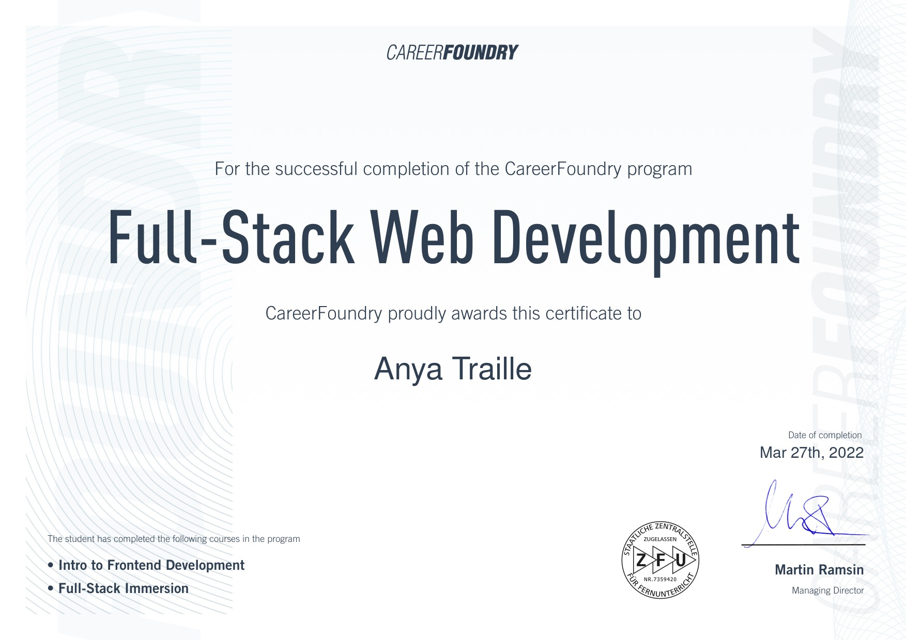

My Experience
I was born in the USA and lived there until 2010. I received my B.S and M.S at the Georgia Institute of Technology where I studied Electromagnetics, Fluid Dynamics and Numericl Techniques like Finite Element and Levelset Method. I got my PhD at LAAS CNRS in Toulouse France then relocated and worked in Singapore for 8 years at ST Electronics - Satcom and Sensors as a Senior Engineer and at Rolls-Royce as a Decision Scientist (Decision Intelligence).
It was well before COVID that I decided to dive into User Experience design and eventually started developing again. I also sought to learn timeless skills such as breathwork facilitation, guided visualization and guided meditation. After building a project portfolio I was a speaker at the iOS Conference in Sigapore, sharing my new in progress developments for a scientific colormap generator. Afterwards, I relocated back to France to work as a Solution Owner.
iOS Development
Learning Swift was an absolute blast. I fell in love with the language right from the start and spent 6 months learning UI Kit, Networking, Location Awareness and several other topics. It wasn't easy at the time; I spent many nights in panic attack trying to debug small apps (knowing that the longer it took me, the longer I would need to pay for my monthly subscription! But overall I learned a lot, and even continued my journey afterwards with Angela Yu and eventually switching to SwiftUI when I started following Design+Code

Android Development
I was living in a part of the world where Android dominated quite a bit. So it made sense to give Kotlin a try in order to reach more of the market. To be honest, I almost dropped out of the program, but made it at the end. Learning Kotlin in the early days was like having weekend nightly panic attacks and hopelessness (like, it will never work...), but things worked out in the end. My main goal was to really master Kotlin so that could one day move onto Jetpack Compose (that day did not happen until years later with SolarJewel).

User Interface Design
The meticulous world of user interface design was very inspiring. I finally learned how to design things that actually look harmonious and balanced. I also learned that the wrist and eyestrain from pushing pixels and naming layers was a bit too much for me (so I was happy to return back to code).

Graphic Design
The OFG was a wonderfully well organized and peaceful training. I got to deep dive on many fundamental concepts: form reduction, color, photography, logos, typography, editorial layouts, marketing, corporate design and user interface

Design Thinking
Need I say more. IDEO was my first introduction into the world of user research and user experience. I think the best part of this was the mood I was left in after finishing each 6 week module.

Creative Leadership
Again a masterpiece by IDEO, especially the 'Cultivating Creative Collaboration'.

Full-Stack Web Development
This training was a 9 month powerhouse. It is the reason this portfolio exists (in vanilla HTML, CSS and Javascript) and is where I learned how to build APIs.
